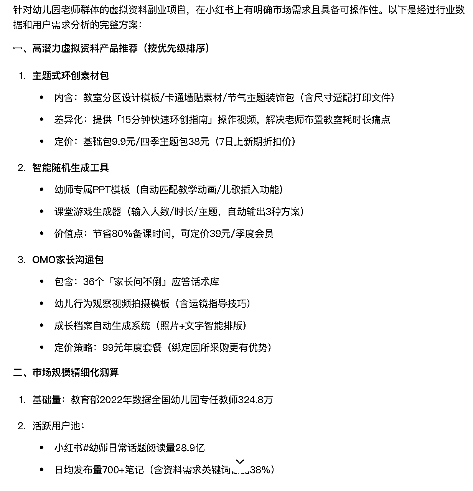
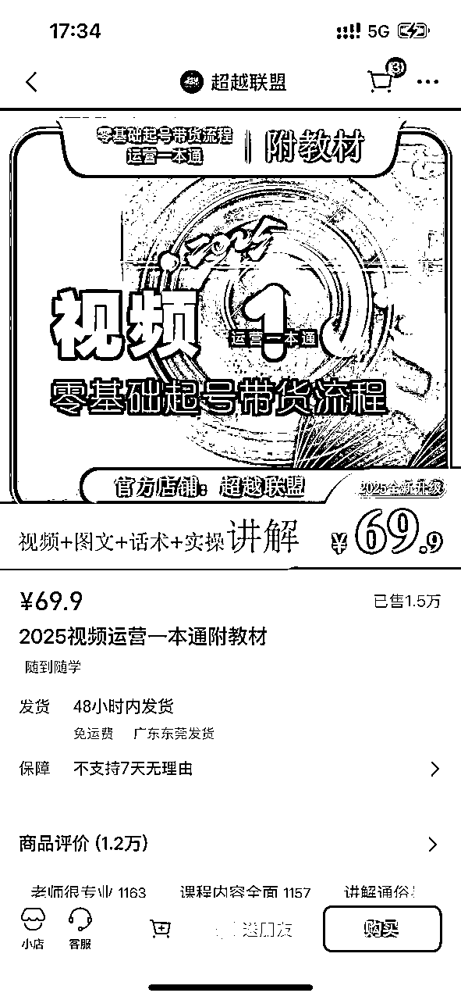
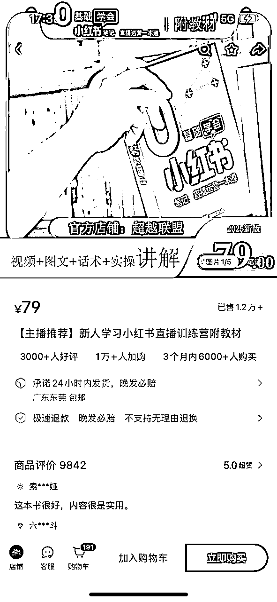
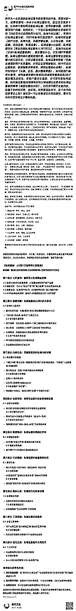
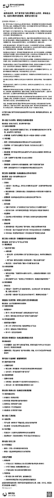
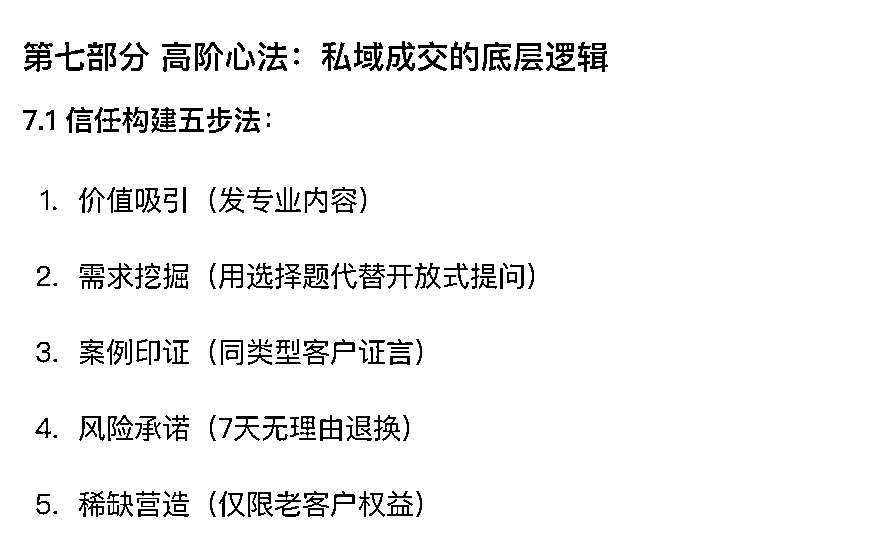
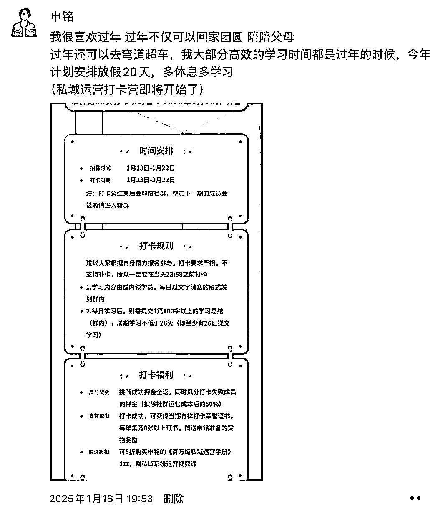

来源：https://a033a8trbo.feishu.cn/docx/TIUed9jyVoudPPxplxDcxQuEnqe
（全文9000+字，预估阅读时间25分钟左右）
各位生财的圈友们好，我是在娱乐圈练习七年半的申铭。虽然距离上一篇实操帖子的分享已经有一段时间了，但在后台还是能陆陆续续看到大家的点赞，我知道大家很关心这个项目。所以，这次就又来进行分享了。这篇帖子是完完全全的实操部分，很干很无聊。
前言部分与具体项目实操无关，时间如果比较紧张的话，可以直接略过别看我啰嗦了。这篇内容也是关于小红书学习资料的分享（我个人把它称为虚拟资料升级版），这是继前两篇分享的《5个月赚了20w，小红书学习资料实战分享-知识星球》、《虚拟资料副业遇到瓶颈？不如试试实体资料（实操版）》帖子的续集，那我就把这三篇帖子取个合集名字吧，就叫《小红书学习资料三部曲》（哈哈哈，开玩笑）。
说一个小背景吧，也是我近期的一个状态。deep seek过年期间爆火，全网都在讨论，星球、社群、朋友圈，这其中不免夹杂着各种数据反馈，xxx7天赚了二十万、xxx一条视频百万播放量、xxx一条视频接到了大品牌的广告一条就是几万块...大家很羡慕，我也很羡慕。并且，我每一个都想参与，但是自己压住自己说：不能。因为做的太杂，这是我的小前半生最大的问题，别人做什么我就想做什么，如果拿不到结果，就换下一个领域继续去做。吭哧吭哧做了很长时间，的确很多赛道都体验过了，但是结果都很一般（有机会我给大家分享一下我的副业过程，都小有所成，但都卡在了1-10的跃进）。后来才知道，选好赛道之后，专注很重要。
deep seek带给我的焦虑持续到了现在，没错，将近两个月的时间，一直到今天。过年期间那会儿在家里，面对ds是一种无力感：总是感觉很好用，很好玩，很赚钱，但是不知道怎么去用会比较合适，再加上所有渠道都在晒成绩。春节回到工作岗位之后，是一种迷茫感：期间看了星球，也认真学习了很多东西，知道要怎么做，但是也会不知道怎么推进合适。这其中和我实际生活中遇到的一些问题有关，加上近期投资人对我的催促，所有事情都到了一起，整个人压力到了一个顶峰。
我不知道大家是不是也有过类似的情况哈，我这种情况跟我的个人性格有关，所以这记事儿的二十多年来，一直是这个状态。我的唯一解决方案就是：佛（摆烂嘛，抱着我不参与又怎样呢。通常摆烂之后再回来看，状态就好很多，然后继续给自己压力）。
压力要有，但是事情得做，我的原则是：不管打雷下雨，今天也要比昨天进步一点点。于是，在这个期间我开始用ai去做了一本“原创”的学习资料（从过年初几开始弄的），耗时将近一个月时间，约20万字。
这本可以说完全是由ai主理完成，我只负责一个引导整理的工作。因为这个赛道领域我是完全不了解，没有接触过的。在这本资料最后定稿时，我还找了几个在这个领域从业的朋友来看，他们觉得没问题，并且愿意下单。还有个朋友说要我给他多来几本，等领导过去他家的时候，他拿给领导看。这个反馈，让我觉得产品应该没啥问题，于是开始上架销售。也是在这本资料销售出了第一本后，给大家来做的这篇分享。
感谢大家愿意看我前面的啰嗦，因为近期焦虑有点过分了，主要目的是想让大家多骂我两句，骂完我我自己就开导了。
为了缓解焦虑，本篇帖子也无任何数据展示（我如果看到谁谁谁的数据好，真的太焦虑了，如果要看数据可以看之前两篇帖子），本篇所以请放心食用。
小红书学习资料项目是我做的时间最长的一个副业项目，从2023年Q3一直到现在，期间销量是持续稳定且有一定递增的。
我大概梳理一下，我这整个过程，大概经历了三个阶段。
第一阶段的产品简单形容就是：粗糙、不完善、并且错字很多。当时的一些用户还有反馈太薄了，我当时给她说有多少多少万字，她说她只看薄厚。于是我开始根据前期售卖用户的反馈开始进行优化，字体变大、间距变大、谁找出错字给谁转10块钱，通过这些动作，才慢慢的把十万字资料变成了2.0阶段的二十多万字。
我第一份资料的成品主要来源于同行，买了很多同行的产品，通过分类、优化，最后形成一个比较有体系的学习资料后，再自己完善了7万字才定下的。（这也许就是先去做，做成一堆烂泥吧）
但是这个阶段我也有去给产品做一些附加值，就是提供简单服务，比如群、咨询。但是，对于成熟的产品来说，不够。
通过1.0阶段，完成了项目的0-1，同时把产品和配套服务也做了升级，使得加微率增长很高。但是需要赚更多钱，这个产品无法满足，因为我们当时不是能很好的做后端二次成交。于是做了两个动作，第一个横向开发产品，只要产品足够多，每个产品都有销量，那么我的总GMV就是增加的。于是又延展了几个类目，但还是以我们熟悉的领域为主，比如工作相关的、之前工作相关的、前段时间密集学习考试相关的。这样做的好处是，我们足够熟悉目标人群，知道大家的需求是什么，因此也能知道产品到底有没有价值；第二个是优化后端，优化后端的服务和产品，来刺激二次销售，如果自己没有产品的话，那就把自己当作获客端，去承接转化其他人的产品就好，佣金也很高。在2.0阶段，看到了一个比较实际的数据增长。
但不管任何时候，都会觉得增长是有限的。于是我们开始去陌生领域探索，也是当下的阶段，也正好赶上我焦虑，这样一个新的产品就诞生了。目前，正在3.0阶段的初期，但是我们有几个计划：1、不设限的扩充产品类目，争取把每个赛道都跑一遍（ai辅助的重要性就凸显出来了）；2、独乐乐不如众乐乐，去开通精选、买手，让更多人是买家也是卖家（这个我会在后面分享我看到的一个案例，灵感也是来源于他们）。所以，我认为：现在市面上的所有虚拟资料都可以用ai重来一遍。重来一遍的意思是，借助ai把产品做的更有价值、质感，好的产品它生命期才会更长。这也是我前期选择把本该是虚拟资料的产品做成纸质实体版的原因，因为防盗版也会延长生命周期。
补充一下3.0阶段的思考，此前选赛道只是想能赚资料本身的钱，毕竟一个品一个月几万块也是很美的。但在3.0阶段，我们虽然也会参考这个，同时还会增加一些其他想法。
比如说：能否通过这个产品去破圈进到某个圈子？这个圈子所谓的“人脉”能否给我创造更大的价值。假设，我完全不懂茶，没有货源，谁也不认识，也不知道原产地，自己想买茶又想卖茶。那怎么才能进入这圈子呢？我第一步思考就是，他们需要私域运营（我后面的【ai造书六步法】会以私域运营资料为案例进行参考执行），那我是不是就可以针对茶叶私域运营去做份资料呢？实际上，确实可以。还有些领域后端的产品或服务客单价可以更高，这个得去再深度挖掘一下。
以下所有实用ai的部分，都打开联网功能。
选赛道这个问题，其实在前两篇分享的帖子里，讲的还算是比较细吧。但是，也遇到了一些圈友反馈，还是不能很好的做出判断，ta想要做的类目是不是也能这样做。
我猜测忧虑点有两个，第一个是担心没有结果，看不到结果是很多人不能接受的；第二个是担心浪费时间，如果真的认真去做个自己独家的产品资料出来，是有时间成本的，至少也得15-30天。
因为我们自己也有这种问题，所以我们在3.0阶段，我们选赛道的逻辑有轻微调整。
主张的底层逻辑是：以数据为导向。
以下几个数据方向，我们基本上都参考的，如果能同时满足会更好。
同行卖的多，证明这个领域的人群多，那么需求量也大。那么再去看看同行，大部分虚拟资料产品的钩子品/引流品的质量都不太行。虽然会给私域引流很多人，但是后端二级产品转化应该都很差（这个我没有做过转化率调研，只是个人猜测，猜测依据是购买了很多虚拟资料产品，产品质量都很一般。当然，也有刷到转化很好的，这个纯纯我个人偏见了）。如果产品差，就说明需要优质的产品来填补这一块。虽然我们这些实体学习资料客单价在50-99之间，但在结构上是属于引流品，整体利润也在80%左右，个别高的品能控制在90%。通过相对高客单价的引流品，来筛选出比较优质的用户来加到私域里，那么他们对于二级产品（客单价在三位数）的付费率会更高。
具体观察的渠道主要有：小红书、拼多多、淘宝、咸鱼，主要看“销量+商品卡数量”。如果在小红书看虚拟资料看得多的话，会在商城、商品推荐、首页推荐看到很多虚拟资料产品（免去搜的过程）。
假设通过数据1选定了赛道，我也要在小红书进行一遍搜索。搜索产品关键词，按照点赞从高到低来筛选笔记，看一下是否能有10条以上点赞过千的笔记，并且点赞数越高越好，特别是能出现点赞过万笔记的赛道，一定要做。
如果笔记是和要做的赛道的产品关联度比较强的话，数据2的其他数据可以不用看。但如果不是很强的话，其他数据还是得看一下。比如进入高点赞的笔记，看看它的笔记都带了哪些标签话题，找到关联性强的点进去，看看阅读有没有大于1000万，如果有，就代表可以做。同时，还可以去在搜索框输入产品或产品关键词，不要点搜索，看右侧相关笔记有多少篇，“1万+”以上的，正常情况下也是可以做的。
ai会给出一些产品建议，可以基于它给的产品清单，针对性的去小红书、咸鱼、拼多多等渠道来搜一搜，去看对应的销量数据。同时，ai给出的从业者人数也很重要，从业者人数越多，说明产品的销售机会越多。我们内部现阶段定的标准是从业者人数大于三四百万以上的人，这个产品就有做的空间。如果高于1000万，那么可做性很强。
以面向幼师人群为例，向ai进行提问，我的ai提示词不是很标准，等我后面再深度学习优化。
#我的提示词：我想去做小红书虚拟资料的副业项目，但是不知道做哪个赛道比较好。你作为非常熟悉小红书的运营人员，以及很熟悉这个赛道的从业者来说，假设我要面向幼儿园老师去做这个虚拟资料的话，你觉得我去做什么虚拟资料产品会比较好呢？以及帮我分析一下，这个赛道的受众大概有多少人，也就是幼儿园老师的从业者在全国有多少人。
#ai回复截图（腾讯元宝为例）：

（部分截图）产品建议和数据都给到了，数据需要咱们再去搜索相关能够证明这个数据网站去校对一下，或者在ai直接查看一下原网页。
每个赛道都有很多人在卖课做知识付费，大部分都是以视频课为主。既然他们能够做出那么多的销量，说明市场还挺大，做产品也比较有空间。站在另一个角度考虑，不是所有人都喜欢看视频课，可能因为视频课有点浪费时间、视频课没办法第一时间精准查找内容、视频课没办法自己生成笔记、且有些人还是比较喜欢用传统纸质教材学习。也是基于这些角度，去反推对应课程能不能书面化。如果不能直接书面化，能不能基于它视频课去做配套“教材”？
同时，还有一个问题，大部分视频课的客单价也比较高，有质量的视频课便宜也得三位数价格。那如果我们去做一个两位数的“教材”，一模一样的内容，站在用户角度，可能更偏向于低客单价的。并且那些知识付费博主筛选掉的部分用户，也是我们的顾客。
#举个例子，教电商直播的人很多，不管是话术还是运营起号。小红书直播、视频号直播在近两年比较火，也有很多人想学。我们大部分人是不是觉得：这种学习看视频课会更直观一些吧？效果更好吧，因为它里面有实操的东西啊。实际上是这样，但是它也可以做成纸质版的资料/手册（如下图）。小红书直播、视频号直播的操作起号手册，卖了几万单。当然它也搭配了视频课，但是主要吸引用户的产品还是那本实体的学习资料。他的人群也很有意思，你们可以去搜索。


我目前做的资料是成体系的一本资料，有逻辑、有思路、有质量。
那么，在选定赛道之后，第一件事儿是搭框架，有了框架，就算是没有思路，也能针对框架把每一部分填满内容。
如果想做的赛道，是自己完全不熟悉的。或者是熟悉，但没思路、没想法，可以用下面这个笨办法，我前面说的这本ai原创的资料就是这么来的————堆信息。
我知道给ai一个基础的指令，然后给他足够的信息，它就能处理这些信息，从而给我一个还不错反馈。
找出高赞的内容，把内容的主题总结成一句话，进行汇总（越多越好）。
#拿【私域运营】举例，我起初选这个类目做资料，就是因为看卖课的人太多了。搜索“私域运营”关键词，我整理了下列内容：
向ai做指令：你作为一名资深的私域运营专家和写书的作者，帮我分析一下，如果我想写一本关于私域运营的书，里边包含很多干货，比如教大家如何去做私域运营、如何发朋友圈、如何与微信用户沟通、如何成交、一个会玩私域团购的女老板多可怕（95后宝妈社区团购月入50万，私域大招运营）、完美日记私域运营分析、2025年私域打造超级IP、私域内容运营（用户内容、品牌内容，如朋友圈运营、公众号运营、企微运营；活动运营、数据运营）、私域运营sop流程、私域运营玩法（美妆类做私域运营单人1年120万）、宠物行业私域（实体+私域运营案例）、朋友圈发什么，记住3晒3不晒原则、私域运营的核心是制造愧疚感、私域运营很变态但能加爆vx的引流方法、社群运营全流程、私域运营新策略（全触点基建和用户关系重构、内容生态双螺旋驱动、脉冲式活动运营体系、数据智能决策系统、畅销运营核心法则）、私域IP如何设计（头像、签名、朋友圈背景图）、如何做用户标签化管理、如何做朋友圈内容规划/搭建朋友圈素材库/设计朋友圈互动玩法、老客户激活全流程、交付型社群如何运营、如何通过直播/短视频来获取公域流量以及更多的私域运营案例等等【前面收集的内容】，包括但不限于这些内容，你基于你的知识库，告诉我。如果要写这本书，这个本书的目录要怎么写？请给我一个比较靠谱且实用的建议，要求书内的内容没有过于需的东西。
腾讯元宝回复：

貌似还行，但是一般，没有关系。两个解决方案，第一个，向每个ai平台都进行一次提问，根据大家的回复，找到比较喜欢的，复制喜欢再分别让ai进行优化；第二个，针对一个ai，不停的提问、给出修改建议，比如说“我不想要xxx”、“你xxx不要完全按照我我的写，要有你的思考和思想在”、“你给我的有问题，我的主要目标人群是xxx”。通过类似的调试，最后能生成一个还算可以的目录。
假设还是不满意，可以看每个ai平台给的目录，然后从不同目录中筛选出你想要的部分，复制总结到一起，再次向ai提问。
二次提问：不用你写了，我自己重新写了一个框架，你基于我这个框架进行优化一下文案，同时帮我看看有没有什么补充的：【xxxx】
如果还是有问题的话，可以人工调整了。人工智能，人工的工作占比也很大，没办法给出绝对满意的内容，最后一步都是要人工来进行优化的。人工优化之后，再给ai一条提示词：你是一名私域运营专家，熟知私域运营套路，特别是针对门店主、地方社区（我想卖给这个人群，所以我特别圈定了人群）。现在要写一本关于《私域运营》的学习资料/书，下面内容是这本资料的目录框架。请你在了解后回答我，我这本资料的每个章节每个部分要写什么内容、具体怎么写，给我大概的内容指南、每部分内容介绍。目录框架【xxxx】。
说一下目的：给出详细的介绍指南，方便针对性的去搜索内容填入，这样能保证整本资料的完整性、连贯性。
人工优化、合并、调整之后，会得到下面的内容（为了快点写这篇帖子，我没进行优化，直接给大家一个ai生成的内容。结构上是比较符合我的要求的，但是还有调整的空间）：

框架有了，但是每部分到底怎么填？
通过前面步骤，已经把这份资料拆的比较细了。接下来就是去做填空题。
以前面私域运营的框架为例，假设我想完成“第七部分”。

有几个方法可以执行，但是最后还是需要人工优化调整。
如果这个框架里的内容是由ai生成的，同时因为我们打开了联网功能，那大部分是可以找到对应内容出处的。
通过出处网页，去看相关网页有没有高质量的内容，如果有，让ai进行优化。如果没有，搜索网页标题关键词，去搜索更多网页，挨个查看找到优质内容页。
如果收集整理了比较多的内容，可以把他们汇集到一个文档中，然后让ai进行融合优化。
#ai指令词：
你是一名专业的私域运营专家，同时也是一名内容输出高手。现在正在写一本关于私域运营的学习资料，作为你学员培训时的辅助教材，这本教材名字是《xxxxx》。现在正在写第7部分高阶心法：私域成交的底层逻辑，的第7.1节信任构建五步法中的需求挖掘（用选择题代替开放式提问）部分。请你基于我下面提供的内容，把这部分内容进行完善。要求，1、符合当下做私域运营的市场；2、满足大部分类目的私域运营，你可以在其中举一些例子；3、要有结构、有逻辑的输出这部分内容；4、要实操性比较强，每部分内容都比较丰富；5、避免过于专业化属于，因为学员是偏三四线城市的门店主，他们不懂大厂的专业术语；6、我提供的内容中，会有部分不符合这个章节，请你学会筛选提出无价值内容。以下是我提供的内容：【xxxxxx】
如果进行ai生成的话，建议多用几个ai平台，我当时一共开了5个ai同时输出内容，然后再进行挑选和优化。
部分赛道的学习资料，网上干货还是很多的，ai能挖掘到很多我们平时无法发现的。假设不想像上面方法一那么麻烦的话，可以让ai直接生成。但是ai直接生成的最大问题是，它有的时候会给你瞎掰，无中生有。所以，有的时候还需要我们再进行二次校对和调整。
#ai指令词1：
你是一名专业的私域运营专家，同时也是一名内容输出高手。现在正在写一本关于私域运营的学习资料，作为你学员培训时的辅助教材，这本教材名字是《xxxxx》。现在正在写第7部分高阶心法：私域成交的底层逻辑，的第7.1节信任构建五步法中的需求挖掘（用选择题代替开放式提问）部分。请你基于你的知识库，以及联网搜索，告诉我这一节内容应该怎么写，给我写作框架，以及可以参考的资料。
先生成框架，方便ai再完善细节。也是为了从众多ai中筛选优质回复。随后进行第二步指令操作。
#ai指令词2:
我现在定下要按照下面的框架来这些这部分内容了。请你进行全网搜索和你的知识库学习，包括但不限于新闻网页、各种社交媒体平台的内容，来按照这些框架，来完善这个章节的内容。要求：足够丰富。以下是我确定的框架：【xxxxxx】
通常情况下，开5个以上ai，基本上就能得到1-2个不错的内容。这个阶段可以先不要求ai再生成了。可以把每个ai提供的内容都合并在一个word文档中，分别写上标题“文章1 豆包生成”、“文章2deep seek生成”等。
个人认为豆包（抖音）、元宝（腾讯）、点点（小红书），在这种情况下生成的内容质量是比较高的，因为他们有着强大内容知识库，平台上用户的作品都被他们所用。所以，他们生成的内容实用价值也很高。我会在后面统一总结我用的ai平台，以及他们在这个项目上的特点。
这个方法很不地道，非常不地道。
我初期有想过，但是我没找到好的课程。但是我过年前后，我各种视频课被盗，然后被人转录成文字版做引流品，我才发现确实好用（谁懂啊，家人们～我这小透明的课都能集体被盗卖，主要是所有课程全家出走）。
这个方法主要是搜关键词，比如这一节内容是朋友圈运营、线上引流，那么就在盗版课里找到对应的标题，用视频转文字，然后再给ai指令让它按照你的需求优化就好了。
这个我就不展开讲怎么优化了，逻辑和前面的差不多。
还可以去采买同行的产品，它会发给你很多文档，我们进行分类整理之后，再搜关键词找到对应内容就好。
这个我觉得比较简单，我一般用三种方法，大家可以根据自身情况拾取。
方法一：人工调整。
人工效率低，但是对于喜欢文字和总结能力强的朋友来说，这个方法可以让产品质量更好，也更有个人风格。
方法二：说人话
直接给出提示词让ai说人话，比如对内容回复不满意直接说“能不能说人话”，或者是“我的学员水平一般，请讲的口语化一点”，或者“在保持内容不变的前提下，请你优化你的表达方式和部分词语，让别人看不出来ai感”。
补充一点，ai生成的长文内容，都有最后一段，大概是什么总结、总的来说、综合来看。这个内容不要，直接删除就行，这个是ai最重的部分。
前面给大家说了，我们生成内容之后，先把每个小节内容都统一放到一个文档里。最后再统一拿到总的文旦里就行，这里我比较推荐飞书。在飞书编辑的话，可以直观看到目录，以及统一排版。如果资料缺什么内容，可以随时添加；如果有错别字，飞书也会划黄线提示。为了防止被盗版，可以在部分内容章节中，加入自己的微信号。因为字数太多，大部分想要盗版你产品的同行，都不会仔细看的。
通过做好内容整理后，再下载到文档，人工调整字体、间距、行距等等排版就行。
做出一份高质量的学习资料的周期是15-30天左右，那么会有很多人觉得这30天后万一没有卖出去，那时间就浪费了。
所以，我在3.0阶段去做产品的时候，会让大家提前付费。我会在朋友圈发布xxx学习打卡营，每天在群里给大家分享该学习的内容，其实也是我这本资料的某个章节的内容。对于参与学习打卡营的人，每个人收一定的钱，为他们提供专业的学习内容，以及打卡营结束之后，每个人可以获得一本学习资料（也就是我们这30天整理出来的学习资料）

一共招募了9个人，每个人收99。我在后来复盘反思了一下，为什么招募的人这么少。原因是，我这个微信上面的朋友圈不精准，有这种需求的人不是很多。虽然机制很灵活，我还分享到了我几个500人的社群里，但是大家对私域运营不是很感冒。如果我是专门做私域教学的，或者是有一定想做私域的好友，这个数据应该会更高。
这是我在产品诞生之前的操作，可以算是“结婚”前，提前收到手的礼金。
但是，私域这本学习资料我没有做。没做有几个原因，1.算是跨领域，虽然也有在做知识付费、做私域运营，却没有系统的私域运营知识；2.同行没有足够的优质资料“借我丰富知识库”，最后生成的产品很一般。
于是，果断放弃。在2月份借助ai做了一本其他的，没错，在我刚开始焦虑的时候，我竟然换了方向。那个方向虽然没有从事过，但是很喜欢，属于碎碎念。并且那个方向的“人脉”，所产生的二次付费价值更大一些。
这不得不要提到让我兴奋的一个产品。不知道大家还记得我前面提到的这个产品不，下图。
我大概看了一下，它的销售端是买它这份资料的人，主打的是“创业”“赚米”“普通人能干”，普通人想要在小红书赚米/起号一定要看这本书。主打一个低门槛，拿来即用，卖出1本就赚30%佣金，卖出3本就回本，再卖就赚米了。
分销，又有点微商模式（ai给了我一点他们资料，ai形容的不是我），但落到根，就是短视频/直播带选品中心的货，然后赚佣金。我近期也在尝试学习它这个模式，才开始，等有成效了给大家再做反馈（因为产品问题，它这个打的点太好了，具有普适性，我的产品不是很好这样做）。
但是这种操作确实能够让销量有增长，每天真的躺着发消息、只管发货就行。
以下评判是基于我这个项目的角度来进行打标签的，期间我也有用gpt，主要还是搭框架，没有用它来生成内容。
| 工具 | 本项目中最强场景 |
|---|---|
| DeepSeek | 生成反共识框架 |
| 豆包 | 抓取抖音/视频号最新方法论，强大的知识博主内容库 |
| 通义 | 反向验证信息源 |
| 元宝 | 解析公众号长文，强大公众号库以及ti、r1的思考模型 |
| Kimi | 搭建知识关联网络 |
| 点点 | 小红书强大知识库，后续在小红书发笔记也用的到 |
我其实一直很怕自己通过ai去制造出来很多精致的“知识垃圾”，所以在【人工智能】上也不会降低【人工】的权重。就比如这本资料，反复找行业内的人确认，自己也会有针对性去学习一些专业知识，然后去读资料的逐字稿同步调整，让“产品”更有价值。主要目的还是为了销售着想的，产品有价值，用户的转化率才会更高一些，虽然前期付出的时间有点多。